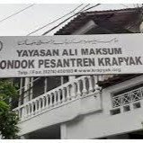
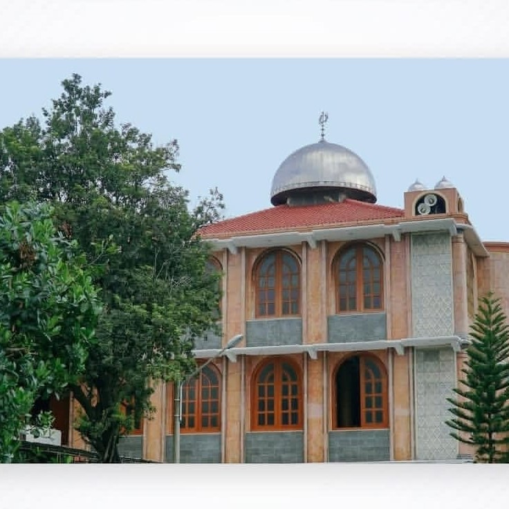

Tentang Pondok Pesantren Al-Munawwir
Pondok Pesantren Al-Munawwir adalah salah satu pusat pendidikan Islam terkemuka yang berlokasi di Krapyak, Yogyakarta. Pesantren ini dikenal luas dengan tradisi keilmuannya, khususnya dalam bidang Al-Qur’an, serta menjadi tempat lahirnya banyak ulama dan cendekiawan.
-

1911
Awal Berdiri
Pondok Pesantren Al-Munawwir didirikan oleh KH. Muhammad Munawwir di Dusun Krapyak pada 15 November 1911. Sejak awal, pondok ini menekankan pendidikan Al-Quran sebagai ciri khasnya.
-

1942 – 1968
Periode Pengasuhan Baru
Setelah wafatnya KH. M. Munawwir, kepemimpinan diteruskan oleh KH. Abdullah Affandi Munawwir dan KH. Abdul Qodir Munawwir. Pada masa ini lahir Madrasah Huffadh sebagai wadah khusus pendidikan Al-Quran.
-

1968 – 1989
Periode KH. Ali Maksum
Di bawah KH. Ali Maksum, pondok berkembang pesat dengan menambah pengajaran kitab kuning secara klasikal. Lembaga pendidikan formal mulai berdiri, termasuk Madrasah Tsanawiyah dan Aliyah untuk putra-putri.
-

1989 – Sekarang
Perkembangan Modern
Kepemimpinan berlanjut dari KH. Zainal Abidin Munawwir hingga KH. R. Muhammad Najib Abdul Qodir. Pondok terus memperluas perannya, membuka lembaga pendidikan tinggi Al-Ma’had al-‘Aly, hingga pengajian masyayikh dan alumni (IKAPPAM).